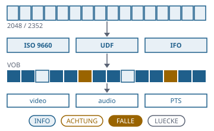

Vom Scheibenabbild zum Elementarstrom, ohne etwas zu erfinden
Funktionsübersicht für die Präsentation des envisionz-Frameworks, Stand 28.09.2026. Die Schicht unter dem Videodekoder: Sektoren und Dateisysteme (ISO 9660, UDF), DVD-Verwaltung (IFO, VOB), MPEG-Programmströme mit Bild, Ton und Zeitstempeln, Lesbarkeit beschädigter Abbilder und eine Erkennung, was eine Datei ist – jede Aussage als eingestufter Befund. Je Verfahren: Zweck, Methoden, Einsatz im Framework, Anwendungen, Beispiele. Die Beispiele sind gekürzt.

Grundsätze des Moduls
READ geöffnet; große Titelsätze werden Datei für Datei durchgereicht, nicht in den Speicher geladen.Befunde envisionz.media
Befund, MediaException, UnsupportedMediaException
Der Steckbrief eines Datenträgers ist kein Fließtext, sondern eine Liste von Befunden: Stufe, Bereich, Feststellung und Folge. INFO ist eine Sachangabe, ACHTUNG muss beachtet werden, FALLE ist eine bekannte Stelle, an der erfahrungsgemäß etwas schiefgeht, LUECKE sagt, was dieses Werkzeug nicht behandelt.
Methoden
Befund(stufe, bereich, text, folge);Befund.Stufe.INFO | ACHTUNG | FALLE | LUECKEBefund.info(bereich, text),achtung(bereich, text, folge),falle(...),luecke(bereich, text)MediaException(message[, cause]),UnsupportedMediaException(what)
Eingesetzt in
MediaException)Wofür
Eine gemeinsame Sprache für alles, was über Datenträger, Strom und Bild festgestellt wird – bis in Restaurierungsplan und Protokoll.
Datenträger und Dateisysteme envisionz.media.disc
Sektorquelle, Iso9660, Udf – sektorweise, nicht dateiweise
Sektorquelle erkennt an der Sync-Folge 00 FF … FF 00, ob ein Rohabbild mit 2352 Byte je Sektor vorliegt (Video-CD, Modus 2 Form 2 mit 2324 Byte Nutzlast) oder ein gewöhnliches mit 2048. Iso9660 liest Primär- und Zusatzbeschreiber, erkennt Joliet und Rock Ridge. Udf folgt der Kette Anker → Beschreiberfolge → Dateisatz → Steuerblock → Verzeichnis, mit Sektorangaben relativ zur Partition; es übergeht gelöschte Einträge, rechnet die Kennungsprüfsumme nach und liest Daten, die im Dateieintrag selbst stehen. Hintergrund, Formeln und Pseudocode →
Methoden
Sektorquelle(Path),rohsektoren(),modus(),form(),nutzlast(),sektoren(),sektor(n),lese(versatz, laenge)Iso9660(quelle),gefunden(),datentraegerName(),joliet(),rockRidge(),alleEintraege(),befunde()Udf(quelle),gefunden(),partitionStart(),kennzeichnung(),alleEintraege(),befunde()
Eingesetzt in
Wofür
DVD- und VCD-Abbilder öffnen, ohne sie einzuhängen; Dateien über vier Gigabyte, die nur im UDF stehen, finden.
Beispiel – Inhalt eines Abbilds
try (Sektorquelle q = new Sektorquelle(Path.of("scheibe.iso"))) {
Udf udf = new Udf(q);
List<Udf.Eintrag> eintraege = udf.gefunden() ? udf.alleEintraege() : List.of();
new Iso9660(q).alleEintraege().forEach(System.out::println);
}Lesbarkeit – Lesefehler und Mehrfachsitzungen, und was davon aus einem Abbild zu erfahren ist
C2-Fehler und Sitzungsgrenzen stehen in keinem Abbild. Die Klasse sieht deshalb nach, was das Auslesewerkzeug festgehalten hat: eine .cue- oder .toc-Datei nennt die Sitzungen, eine ddrescue-Fehlerkarte die unlesbaren Bereiche. Fehlt beides, bleibt der Verdacht aus zusammenhängenden Nullsektoren – ausdrücklich als Verdacht gekennzeichnet, denn ein Schwarzbild sieht genauso aus.
Methoden
Lesbarkeit(abbild, quelle),luecken()→Luecke(vonSektor, bisSektor, nachgewiesen, herkunft)sitzungen(),befunde()
Eingesetzt in
Wofür
Unterscheiden zwischen „hier war ein Lesefehler“ und „hier sieht es nach einem aus“ – nur das Erste rechtfertigt, einen Bereich als ersetzt zu kennzeichnen.
DVD-Video envisionz.media.dvd
Ifo – in welcher Reihenfolge die Aufführung zusammengehört
Die VOB-Dateien sind kein Film in Abspielreihenfolge, sondern ein Vorrat von Zellen; die Reihenfolge steht in der Programmkette. Gelesen werden Titel, Programmketten mit Zellen und Spieldauer, Winkelblöcke, Tonart und Untertitel. Zahlen stehen höchstwertiges Byte zuerst, Zeiten sind BCD. vobPruefung gleicht die Größen der VOB-Dateien mit der IFO ab.
Methoden
Ifo(Path),titel(),ketten()→Programmkette(nummer, programme, sekunden, zellen)winkelzellen(),hatWinkel(),tonart(),untertitel(),anbieter()bilddatenSektoren(),vobsStartsektor(),vobPruefung(groessen…),befunde()
Eingesetzt in
Wofür
Menüs, Vorspann und Wiederholungen an der richtigen Stelle; Winkel erkennen, bevor falsch aneinandergehängt wird.
Vobs – die VOB-Dateien eines Titelsatzes als ein Strom
DVD begrenzt jede Datei auf ein Gibibyte; eine Aufnahme von achtzig Minuten liegt in drei oder vier Dateien, und die Grenze fällt mitten in ein Bild. Vobs reicht sie in Namensreihenfolge als einen Strom durch und meldet, wenn die IFO eine abweichende Kette nennt. Daraus lassen sich Bild- und Tonstrom ab einem beliebigen Sektor ziehen und die Zeitstempel an einer Sprungstelle lesen.
Methoden
Vobs(verzeichnis, titelsatz),gegen(ifo),dateien(),groesse(),groessen(),befunde()videoAus(aus),videoAusAb(sektor, aus),videoNach(Path)tonAus(kennung, aus),tonAusAb(sektor, kennung, aus),rohAb(sektor, wieviel)zeitmarken(sektor, tonKennung)→Zeitmarken.Paar
Eingesetzt in
Wofür
Die ganze Aufnahme einer DVD-Sicherung dekodieren, an eine Stelle springen, den Ton getrennt auslesen.
Beispiel – Titelsatz 1 prüfen und Bild- und Tonstrom herausziehen
Path videoTs = Path.of("VIDEO_TS");
Vobs vobs = new Vobs(videoTs, 1);
vobs.gegen(new Ifo(videoTs.resolve("VTS_01_0.IFO")));
vobs.befunde().forEach(System.out::println);
vobs.videoNach(Path.of("titel1.m2v"));
try (OutputStream o = Files.newOutputStream(Path.of("ton.mp2"))) { vobs.tonAus(0xC0, o); }MPEG-Programmstrom envisionz.media.ps
Programmstrom und Videokopf – was im Strom steckt
Zerlegt einen Programm- oder Systemstrom an den Startcodes 00 00 01: Pack-Kopf (MPEG-1 und MPEG-2 verschieden lang), Systemkopf, Füllpakete, Navigationspakete (BF), privater Strom 1 (BD, AC-3/LPCM/DTS/Untertitel am ersten Nutzlastbyte), MPEG-Ton und Video. Videokopf wertet Sequenzkopf und Erweiterungen aus: nicht-quadratische Pixel, Verschränkung und Halbbildreihenfolge je Bild, Pulldown über repeat_first_field, Farbraum aus der Anzeige-Erweiterung, eigene Quantisierungsmatrizen. Hintergrund, Formeln und Pseudocode →
Methoden
Programmstrom(byte[]),video()→Videokopf,befunde()Videokopf:breite(),hoehe(),bildrate(),bitrate(),istMpeg2(),verschraenkt(),veraenderlicheBitrate(),befunde()
Eingesetzt in
Wofür
Den Steckbrief einer Aufnahme erstellen, bevor irgendetwas dekodiert wird.
Beispiel – Befunde zum Videostrom
Programmstrom ps = new Programmstrom(Files.readAllBytes(Path.of("film.mpg"))); // kurze Datei
System.out.println(ps.video().breite() + "x" + ps.video().hoehe() + ", MPEG-2: " + ps.video().istMpeg2());
ps.befunde().forEach(System.out::println);Elementarstrom – der reine Videostrom
Schneidet Navigationspakete und PES-Köpfe heraus; durchgereicht ergäben sie Bruch genau an den Kapitelstellen. Bei MPEG-2 steht die Kopflänge im dritten Byte, bei MPEG-1 folgen erst Füllbytes FF – der Grund, warum ein Extrahierer, der nur MPEG-2 kennt, an einer Video-CD scheitert. Arbeitet auf einem gleitenden Fenster von 1 MiB.
Methoden
new Elementarstrom().kennung(0xE0),videoAus(byte[]),videoAus(daten, aus),videoAus(ein, aus)datei(von, nach),navigationspakete(),befunde()
Eingesetzt in
Wofür
Eingang für den eigenen MPEG-Dekoder in framework-video.
Ton und Zeitstempel envisionz.media.ps
Tonstrom, Tonauszug, Zeitmarken
Tonstrom untersucht: welche Spuren liegen vor, MPEG-Ton in C0–DF oder AC-3/DTS/LPCM im privaten Strom, mit Abtastrate, Kanälen und Bitrate; ein Fund gilt erst, wenn mehrere Rahmen aufeinander passen. Tonauszug zieht einen Tonstrom streamend heraus – ein Titelsatz von knapp drei Gibibyte passt in kein byte[] – und merkt sich den ersten Zeitstempel. Zeitmarken liest Darstellungszeitstempel (90 kHz) aus MPEG-1- und MPEG-2-Köpfen; ihre Differenz nach einem Sprung ist der Versatz zwischen Bild und Ton. Hintergrund, Formeln und Pseudocode →
Methoden
new Tonstrom().untersuchen(d),spuren()→Spur(kennung, unterstrom, art, abtastrate, kanaele, bitrate, bytes),daten(kennung)new Tonauszug().kennung(0xC0),tonAus(ein, aus),ersterPts(),pakete(),bytes()Zeitmarken.suchen(d, tonKennung)→Paar(video, ton),versatzSekunden(),vollstaendig();TAKT = 90000
Eingesetzt in
Tonstrom)app-forensik: ForensikPanel (Zeitmarken)intern: Vobs (Tonauszug)Wofür
Tonspuren benennen, Ton getrennt sichern, Bild und Ton nach einem Sprung gleichlaufend starten.
Beispiel – Bild-Ton-Versatz an einer Sprungstelle
Zeitmarken.Paar p = vobs.zeitmarken(120_000L, 0xC0);
if (p.vollstaendig()) System.out.printf("Versatz %.3f s%n", p.versatzSekunden());Schäden im Bildstrom envisionz.media.ps
Bitfehler – wo ein Dekoder verdecken muss, ohne zu dekodieren
Ein Dekoder füllt zerstörte Stellen mit einer Schätzung, und das Ergebnis sieht aus wie Bildinhalt. Bitfehler findet solche Stellen an den Slice-Startcodes: jede Makroblockreihe trägt ihre Nummer im letzten Byte, ein PAL-Bild braucht 36 davon lückenlos. Fehlende, doppelte oder ungültige Nummern und Bilder ohne Slice werden auf sechzehn Bildzeilen genau benannt. Hintergrund, Formeln und Pseudocode →
Methoden
Bitfehler(hoehe),untersuchen(d)schaeden()→Schaden(bild, vonReihe, bisReihe, art),bildzeilen()heilAnteil(),befunde()
Eingesetzt in
Wofür
Belegbare Restaurierung: verdeckte Bereiche kennzeichnen, statt sie als echten Bildinhalt auszugeben.
Was ist das für eine Datei? envisionz.media.erkennung
Erkenner und Dateiart – Behälter und Bildstrom getrennt
Liest die Kennungen, die jeder Behälter an bekannter Stelle trägt, und meldet Behälter (Elementarstrom, Programm- und Transportstrom, AVI, QuickTime/MP4, Matroska, DVD-IFO) und Bildstrom (MPEG-1/2, MPEG-4 Teil 2, H.264, MJPEG, DV, Indeo, Cinepak, unkomprimiert) einzeln. Vom Behälter auf das Verfahren zu schließen greift regelmäßig daneben; für eine Restaurierung entscheidet der Bildstrom. Lesbar sind heute MPEG-1 und MPEG-2.
Methoden
Erkenner.erkennen(byte[] kopf)→Dateiart(behaelter, bildstrom, kennung, breite, hoehe, bemerkung)Dateiart.meldung(),Bildstrom.wirdUnterstuetzt(),lesbar()(Anzeigename)
Eingesetzt in
Wofür
Vor dem Öffnen sagen, ob der eigene Dekoder eine Datei lesen kann und warum nicht.
Einsatzmatrix im Framework
Welche Module welche Teile heute nutzen, im Quelltext gezählt (ohne Proben).
| Modul | Befund | Sektoren / ISO / UDF | Lesbarkeit | IFO | VOB | Programmstrom | Ton / Zeitstempel | Wofür |
|---|---|---|---|---|---|---|---|---|
| app-forensik | ● | ● | ● | ● | ● | ● | ● | Steckbrief, Wiedergabe, Ton, Werkzeuge der Kommandozeile |
| framework-restore | ● | ● | Befunde für Quelle, Plan und Protokoll; Sprungsucher über VOB | |||||
| framework-video | nur MediaException im YuvLeser |
Bitfehler und die Dateiart-Erkennung sind geprüft, haben aber noch keinen Aufrufer außerhalb der Proben; Elementarstrom und Tonauszug werden über Vobs genutzt.